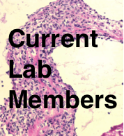
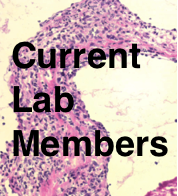

Nathan Schuldt has been a Postdoctoral Fellow in the Binstadt lab since 2012. He obtained his PhD in Genetics from Michigan State University where he studied adenoviral based vaccine and gene therapy platform and their elicited immune responses. Nathan’s research at MSU resulted in 3 first author publications as well as contributions to 7 other publications in several high profile journals. He developed novel adenoviral based malaria vaccines capable of achieving potent CD8 T cell responses that could have future use in multi-platform prime boost vaccine regimens. Nathan also served as Genetics Program President, and was awarded the Outstanding Genetics Graduate Student Award in 2011. Since joining the Binstadt Lab Nathan has been studying dual TCR expressing T cells role in immunity. Dual TCR T cells are a rare subset of T cells that express a TCR α or β chain from each allele resulting in two different TCRs on the cells surface. These cells have been implicated in initiation of autoimmunity, expanding the TCR repertoire, and alloreactive responses like those found in graft versus host disease (GVHD). Due to the lack of reagents capable of detecting these rare cells Nathan has developed single TCR T cell mice on multiple murine model backgrounds. These mice possess only one functional TCR α and β allele and therefore cannot produce dual TCR T cells. By comparing immune conditions of wildtype mice and those from single TCR T cells mice Nathan will determine what role, if any, dual TCR T cells play in immunity. Nathan is also currently working on developing new tools for detecting, enumerating, and tracking this rare population of cells in multiple immune contexts.